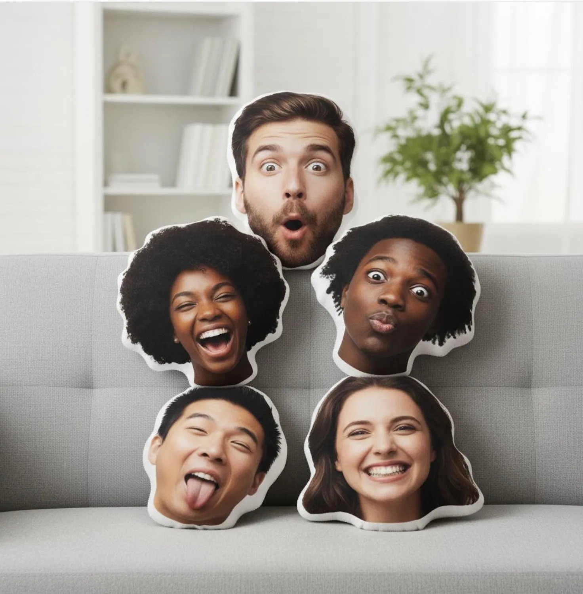
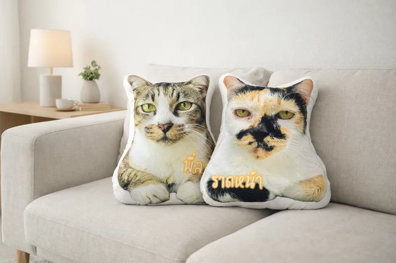

ของขวัญจับฉลากปีใหม่ 2027 งบ 300 และ 500 บาท: ไอเดียที่ใครจับได้ก็ถูกใจ
งานเลี้ยงปีใหม่มาพร้อมโจทย์เดิมทุกปี คือต้องหาของขวัญจับฉลากในงบที่กำหนด โดยไม่รู้ว่าใครจะเป็นคนจับได้ ของสำเร็จรูปอย่างแก้วน้ำหรือผ้าขนหนูมักซ้ำกันทั้งวง บทความนี้รวมไอเดียของขวัญสั่งทำแบ่งตามงบ 300, 500 และ 1,000 บาท พร้อมราคาจริงของร้านอุ่นไอรัก และไอเดียลายสกรีนที่ใครจับได้ก็ใช้ได้ค่ะ

สรุปของขวัญจับฉลากตามงบ
ราคาด้านล่างเป็นราคาต่อชิ้นรวมค่าสกรีนแล้ว สั่งชิ้นเดียวก็ผลิตให้ค่ะ
| งบ | ของขวัญ | ราคา |
|---|---|---|
| 300 บาท | แก้วมัคสกรีนรูปหรือข้อความ | 200 บาท |
| 500 บาท | หมอนไดคัท 15x15 นิ้ว | 333 บาท |
| หมอนอิงสกรีนรูป 15x15 นิ้ว | 399 บาท | |
| หมอนไดคัท 20x20 นิ้ว | 444 บาท | |
| หมอนอิงสกรีนรูป 15x20 นิ้ว | 459 บาท | |
| หมอนอิงสกรีนรูป 20x20 นิ้ว | 499 บาท | |
| 1,000 บาท | หมอนอิงสกรีนรูป 15x30 นิ้ว | 549 บาท |
| หมอนไดคัท 20x30 นิ้ว | 555 บาท | |
| แก้วเก็บอุณหภูมิทรงสตาร์บัคหรือทรง Yeti | 690 บาท | |
| ผ้าห่มสกรีนรูป | เริ่ม 690 บาท |
ของขวัญจับฉลากงบ 300 บาท: แก้วมัคสกรีนกับของกินเล่น

ในงบ 300 บาท ของสั่งทำที่ลงตัวที่สุดคือแก้วมัคสกรีน ราคา 200 บาท เหลืองบอีกประมาณ 100 บาทไว้เติมกาแฟซอง ชา หรือขนมใส่ลงในแก้ว แล้วห่อรวมเป็นชุดเดียว คนจับได้จะได้ทั้งของใช้และของกินค่ะ
แก้วมัคเหมาะกับงานจับฉลากเพราะใช้ได้ทุกเพศทุกวัย วางบนโต๊ะทำงานได้ทันที และสกรีนได้ทั้งรูปและข้อความ ถ้าไม่รู้จะใส่ลายอะไร ดูไอเดียได้ที่หัวข้อสกรีนลายอะไรดีด้านล่างค่ะ
ของขวัญจับฉลากงบ 500 บาท: หมอนไดคัทและหมอนอิงสกรีนรูป

งบ 500 บาทเป็นงบที่เลือกได้มากที่สุด ของที่เข้างบมี 2 แบบค่ะ
- หมอนไดคัท ตัดตามรูปทรงของคน สัตว์เลี้ยง หรือมาสคอต ขนาด 15x15 นิ้ว 333 บาท และ 20x20 นิ้ว 444 บาท
- หมอนอิงสกรีนรูป ทรงสี่เหลี่ยม ขนาด 15x15 นิ้ว 399 บาท, 15x20 นิ้ว 459 บาท และ 20x20 นิ้ว 499 บาท ถ้าต้องการสกรีนด้านหลังด้วย เพิ่ม 100 บาท
หมอนเป็นของจับฉลากที่ดูชิ้นใหญ่คุ้มงบ เอาไปวางที่โซฟาหรือเก้าอี้ทำงานได้เลย ถ้าทั้งทีมสั่งพร้อมกันหลายใบ ทักไลน์มาถามราคาส่งได้ค่ะ
ของขวัญจับฉลากงบ 1,000 บาท: ชิ้นใหญ่ขึ้นและใช้ได้นาน

บางบริษัทตั้งงบจับฉลากไว้สูงขึ้น หรือเป็นรางวัลใหญ่ของงาน ในงบไม่เกิน 1,000 บาทเลือกได้ดังนี้ค่ะ
- ผ้าห่มสกรีนรูป เริ่ม 690 บาท ผ้านุ่ม ซักเครื่องได้ เหมาะกับห้องแอร์ในออฟฟิศ
- แก้วเก็บอุณหภูมิทรงสตาร์บัค 16 ออนซ์ หรือทรง Yeti 30 ออนซ์ ราคา 690 บาท ฟรีหลอดสแตนเลส
- หมอนไดคัทขนาด 20x30 นิ้ว 555 บาท หรือหมอนอิงทรงยาว 15x30 นิ้ว 549 บาท
สกรีนลายอะไรดี เมื่อไม่รู้ว่าใครจะจับได้
ของสั่งทำส่วนใหญ่ใส่รูปของผู้รับ แต่งานจับฉลากไม่รู้ว่าใครจะได้ จึงควรเลือกลายที่เป็นของทุกคนในวง ไอเดียที่ใช้ได้มีดังนี้ค่ะ
- รูปรวมทีมหรือรูปงานเลี้ยงปีก่อน ใครจับได้ก็มีตัวเองอยู่ในรูป
- มุกประจำออฟฟิศ เช่น คำพูดติดปากของทีม หรือประโยคที่ได้ยินในห้องประชุมทุกสัปดาห์
- ข้อความกลาง ๆ สำหรับผู้โชคดี เช่น "ผู้โชคดีประจำปี 2027" หรือ "ปีนี้ต้องเฮง"
- โลโก้บริษัทกับปี 2027 เก็บเป็นของที่ระลึกงานเลี้ยงได้
- รูปสัตว์เลี้ยงประจำออฟฟิศหรือมาสคอต ทำเป็นหมอนไดคัทได้น่ารัก
ลายที่ควรเลี่ยงคือรูปหรือชื่อของคนใดคนหนึ่ง เพราะถ้าคนอื่นจับได้จะใช้ต่อได้ยาก ยกเว้นทั้งวงตกลงกันไว้ก่อนว่าเป็นของแกล้งกันค่ะ ส่งรูปและข้อความมาทางไลน์ได้เลย เราจัดวางแบบให้ดูก่อนผลิตทุกชิ้น
ต้องสั่งล่วงหน้ากี่วันให้ทันงานเลี้ยง
ร้านใช้เวลาผลิต 3–4 วันหลังยืนยันแบบ แล้วบวกเวลาจัดส่งอีก ช่วงกลางถึงปลายเดือนธันวาคมคิวผลิตแน่นทุกปี จึงแนะนำให้สั่งก่อนวันงานอย่างน้อย 7–10 วัน ถ้างานเลี้ยงใกล้เข้ามาแล้ว ทักไลน์แจ้งวันงานมาก่อนได้ค่ะ เราจะบอกตรง ๆ ว่าทันหรือไม่ทัน และแจ้งวันส่งให้ตั้งแต่ตอนยืนยันออเดอร์
สั่งของขวัญจับฉลาก ส่งรูปมาทาง LINE ได้เลย
ทำแบบให้ดูฟรี แจ้งราคาและวันส่งชัดเจนก่อนผลิตค่ะ
แอด LINE @aunirakคำถามที่พบบ่อยเรื่องของขวัญจับฉลาก
ของขวัญจับฉลากงบ 300 บาท เอาอะไรดี
แก้วมัคสกรีนรูปหรือข้อความ ราคา 200 บาท แล้วเติมขนมหรือกาแฟซองอีกประมาณ 100 บาทให้ครบงบ เป็นของที่ใช้ได้ทุกเพศทุกวัยและไม่ซ้ำกับของคนอื่นค่ะ
ของขวัญจับฉลากงบ 500 บาท เอาอะไรดี
หมอนไดคัทขนาด 15x15 นิ้ว 333 บาท หรือ 20x20 นิ้ว 444 บาท และหมอนอิงสกรีนรูป 399 ถึง 499 บาท อยู่ในงบพอดี สกรีนรูปทีมหรือข้อความปีใหม่ได้ตามต้องการค่ะ
ไม่รู้ว่าใครจะจับได้ ควรสกรีนลายอะไร
เลือกลายที่เป็นของทุกคนในวง เช่น รูปรวมทีม มุกประจำออฟฟิศ โลโก้บริษัทกับปี 2027 หรือข้อความอย่าง ผู้โชคดีประจำปี 2027 เลี่ยงรูปหรือชื่อของคนใดคนหนึ่งค่ะ
ต้องสั่งล่วงหน้ากี่วันให้ทันงานเลี้ยงปีใหม่
การผลิตใช้ 3 ถึง 4 วันหลังยืนยันแบบ บวกเวลาจัดส่ง ช่วงธันวาคมคิวแน่น แนะนำสั่งก่อนวันงาน 7 ถึง 10 วัน ทักไลน์ @aunirak จองคิวก่อนได้ค่ะ
อ่านต่อ / สินค้าที่เกี่ยวข้อง
บทความ: ของขวัญปีใหม่ ให้ผู้ใหญ่ เจ้านาย และลูกค้า
บทความ: ของขวัญวันเกิด ไม่ซ้ำใคร
บทความ: หมอนสกรีนโลโก้ ของพรีเมียมองค์กร
แก้วสกรีน เริ่ม 200.- · หมอนไดคัท เริ่ม 333.- · หมอนอิงสกรีนรูป เริ่ม 399.- · ผ้าห่มสกรีนรูป เริ่ม 690.-